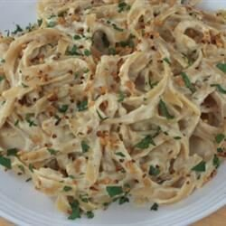

Chicken Alfredo

Chicken Alfredo 'dirtied up' a bit. Delicious, and anyone can make it. Kids love it, and it is a real treat. Serve with mozzarella garlic bread for an added bonus!
Ingredients you will need
- 1 (16oz) Box of Fettucine
- 1/2 pound of bacon
- 2 tablespoons of butter
- 1 large onion, diced
- 2 (16oz) jars of Alfredo sauce
- 1/2 cup parmesan cheese
- 1 tablespoon Italian seasoning
- 1/2 teaspoon of garlic salt
Directions
- Bring a large pot of lightly salted water to a rolling boil. Cook the fettuccini in the boiling water until cooked through yet firm to the bite, about 8 minutes; drain.
- Cook the bacon in a large, deep skillet over medium-high heat until evenly browned, about 10 minutes; drain on a paper towel-lined plate. Finely chop bacon and set aside.
- Melt butter in a large skillet over medium heat. Cook and stir the chicken, onion, and garlic in the butter until chicken is browned, about 5 minutes. Stir in the alfredo sauce, Parmesan cheese, Italian seasoning, and garlic salt; continue to cook and stir until the chicken is no longer pink in the center and the sauce is heated through, about 5 minutes more. Add the chopped bacon and mix to serve.